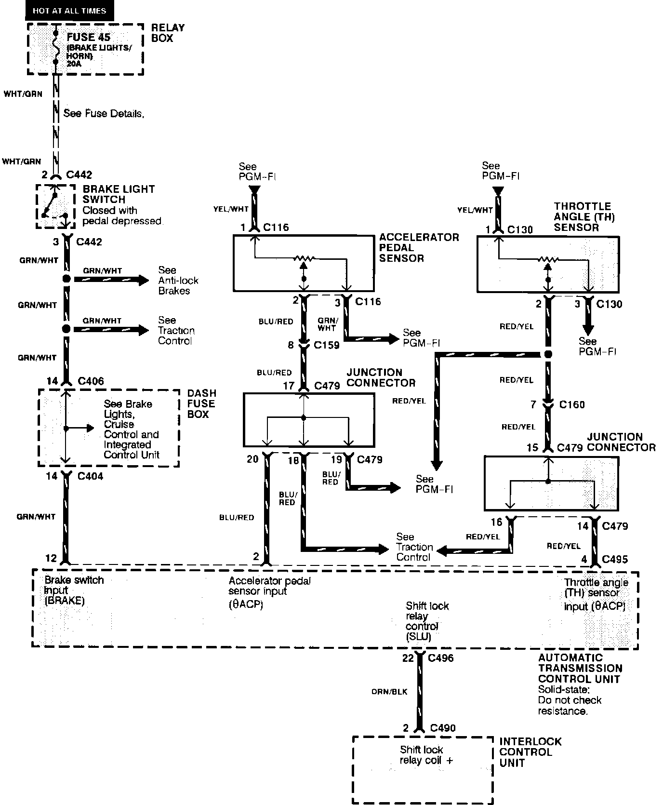

Operation CHARM
: Car repair manuals for everyone.
Home
>>
Acura
>>
1991
>>
NSX V6-3.0L DOHC
>>
Repair and Diagnosis
>>
Powertrain Management
>>
Computers and Control Systems
>>
Sensors and Switches - Computers and Control Systems
>>
Throttle Position Sensor
>>
Diagrams
>>
Electrical Diagrams
Electrical Diagrams
Automatic Transmission Controls: Brake Light Switch, Interlock Control Unit, Accelerator Pedal Sensor And Throttle Angle Sensor:
